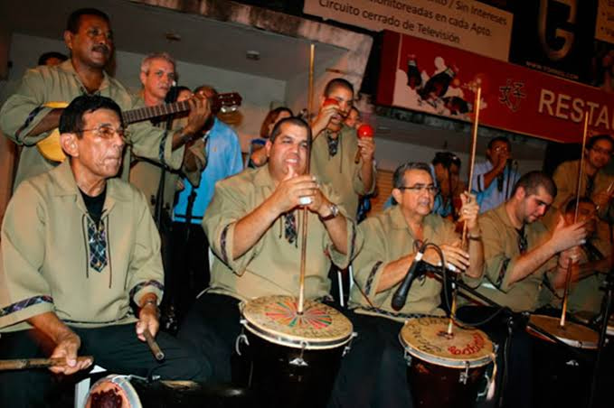
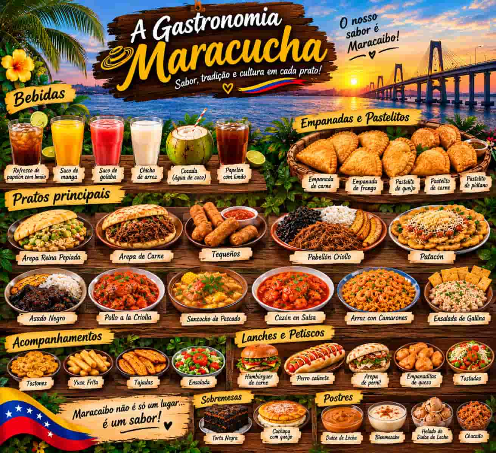
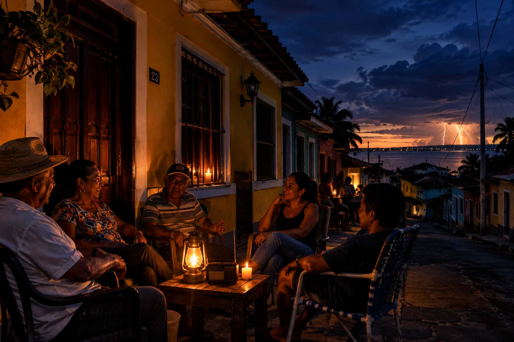

Maracaibo: Tierra do Sol Amada
Dados Rápidos
Ensolarado (Média de 34°C)
- Localização: Estado Zulia, Venezuela
- Clima: Semiárido tropical quente
- Símbolo: Ponte Rafael Urdaneta
- Prato Típico: Patacón Maracucho
Cultura, Sabores e Cotidiano
A Gaita Zuliana
A música corre nas veias de Maracaibo através da Gaita, um gênero musical tradicional tocado com furro, quatro, maracas e tambora. É a trilha sonora que une as famílias e ecoa com força total nas festividades do ano inteiro.

Sabores de Maracaibo
A culinária maracucha é famosa por sua criatividade e sabores intensos. O rei das mesas é o Patacón (banana verde frita e prensada, recheada com carne, queijo e molhos), acompanhado de deliciosas mandocas e empanadas fritas.

Calor Humano e Resiliência
O povo de Maracaibo é conhecido por sua alegria diante das dificuldades cotidianas. Quando falta energia elétrica, é uma tradição cultural os vizinhos colocarem as cadeiras na frente de suas casas coloridas para conversar e refrescar-se com a brisa da noite.
